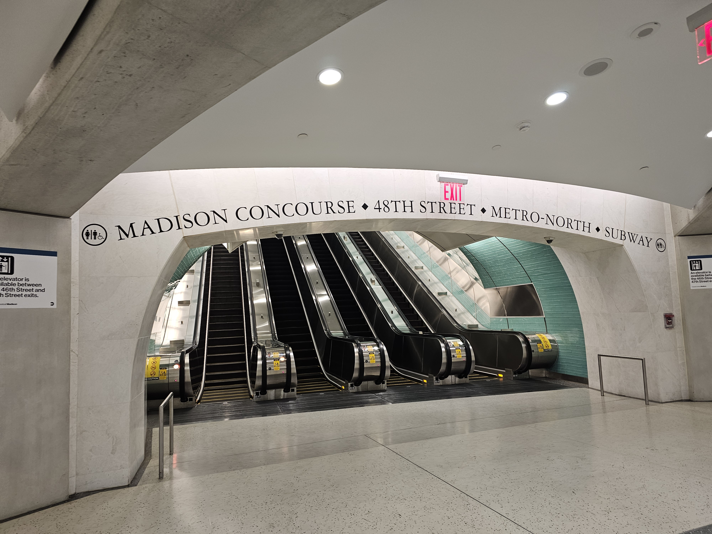
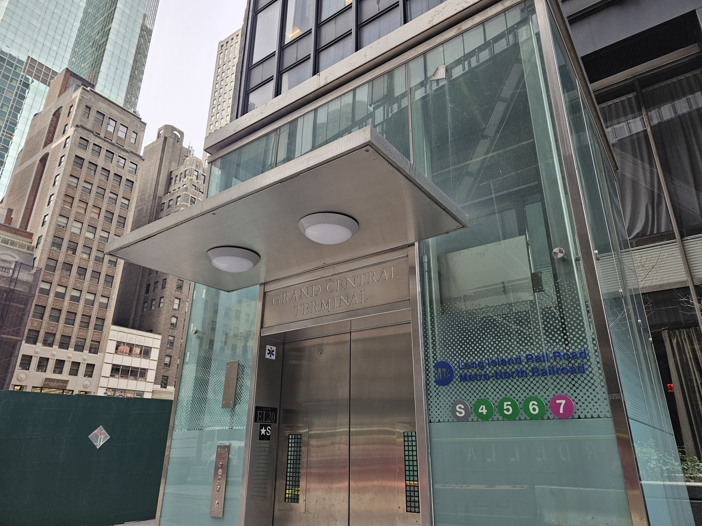
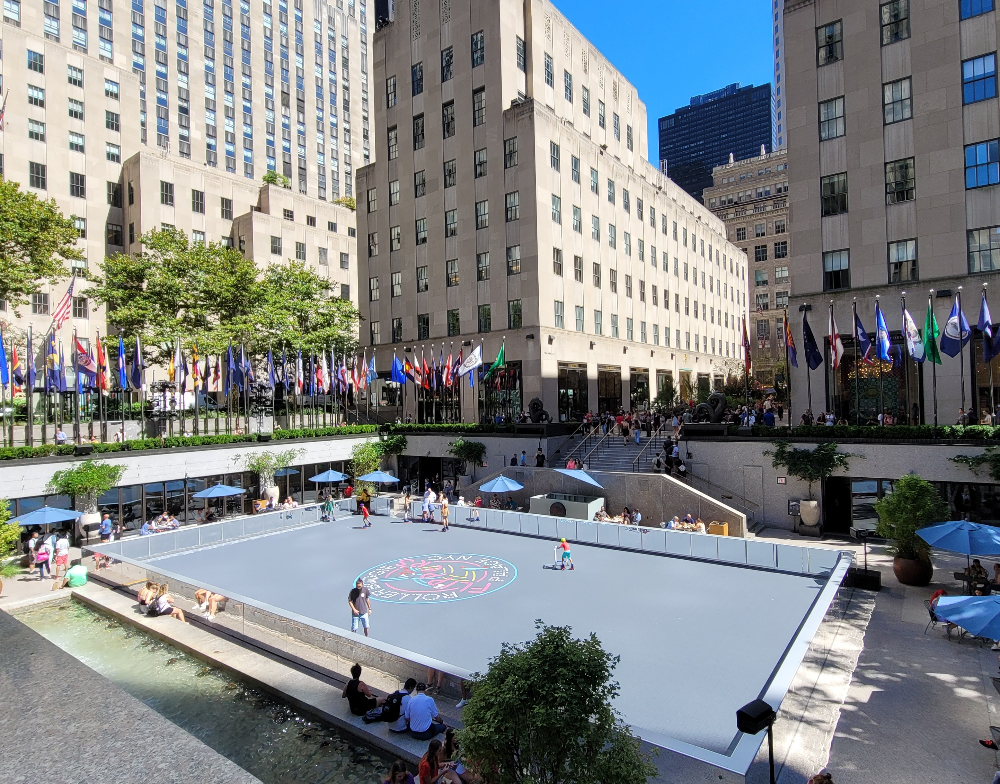
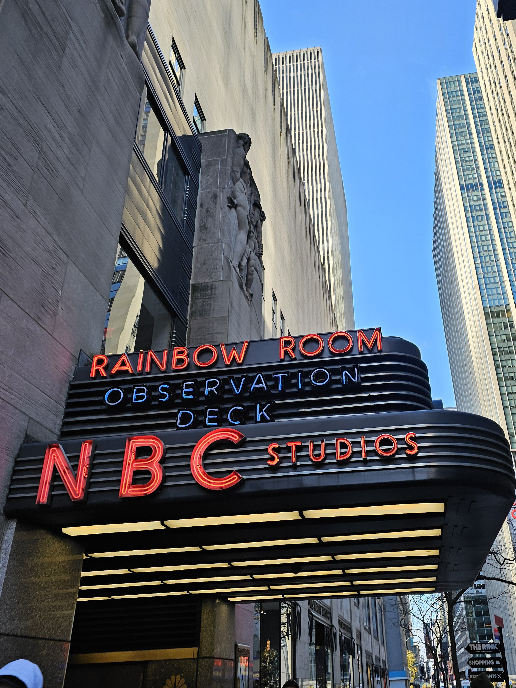
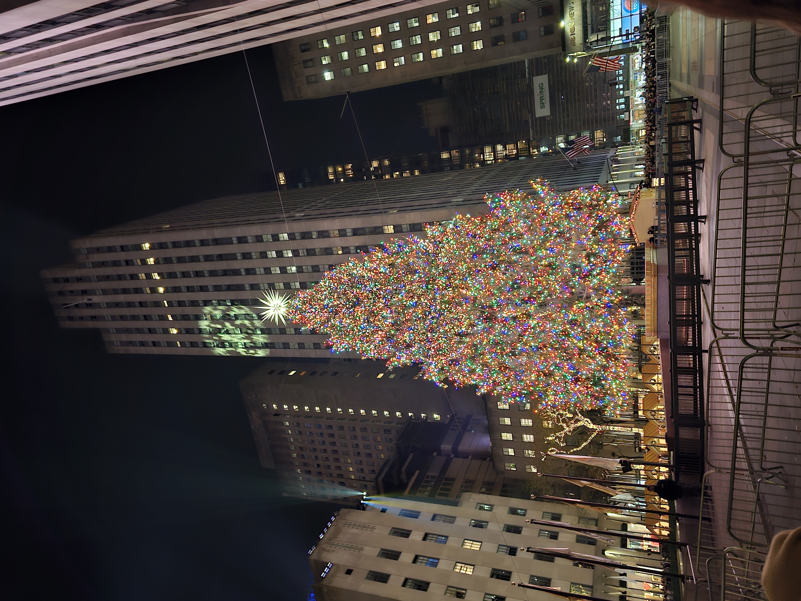

By Walking
- Exit from the platform your LIRR train arrives on and head to the mezzanine.
- For exiting the mezzanine to the street, you have two choices.
- Choice 1: Take the 47th Street escalator to the concourse. Then exit to street by the stairs or elevator.
- Choice 2: Take the 48th Street escalator to the concourse, then walk straight. Take the elevator that will bring you to the street level.
- Once at street level, from either exit, walk NORTH along Madison Avenue, until you reach 49th Street.
- Then turn LEFT and walk along 49th Street, passing 5th Avenue, where then you will arrive at Rockefeller Center.

Some Tips and Tricks
- At Grand Central, there is a set of elevatorsthat will take you up from the mezzanine to the concourse.
- It's located between the 46th Street and 47th Street escalator banks on the mezzanine, so look for signs.
- When you exit the 48th Street elevator, it will leave you in the middle of the sidewalk.
- From it, walk west and cross Madison Avenue, then turn right to continue your trip to 49th and beyond.
- The faster way to get to Rockefeller Center, is by using the 48th Street escalator bank, and its connected elevator to the street.
- To make this faster, make sure you board towards the back of the train going to Grand Central.

Expeccted Time Taken - Minutes
- To get onto street level from the LIRR tracks, it will take roughly 5 Minutes depending on your speed.
- To get from the street level (near 47th/48th Streets and Madison Avenue) to Rockefeller Center, it will take roughly 7 Minutes, depending on your speed.
Map Overview
Below is a map showing the route from Grand Central (when you get onto street level) to Rockefeller Center.
View A Google Maps Route from Grand Central (47th St and Madison Avenue) to Rockefeller Center
Rockefeller Center

BONUS: Around Rockefeller Center, there's a few notable places around the area you can check out!

Radio City Music Hall

The Top of the Rock

Saint Patricks Cathedral

❮
❯
The Winter Christmas Tree